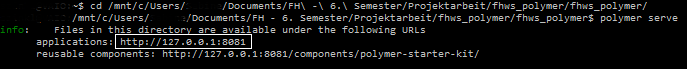

<!--
@license
Copyright (c) 2016 The Polymer Project Authors. All rights reserved.
This code may only be used under the BSD style license found at http://polymer.github.io/LICENSE.txt
The complete set of authors may be found at http://polymer.github.io/AUTHORS.txt
The complete set of contributors may be found at http://polymer.github.io/CONTRIBUTORS.txt
Code distributed by Google as part of the polymer project is also
subject to an additional IP rights grant found at http://polymer.github.io/PATENTS.txt
-->

<link rel="import" href="../bower_components/polymer/polymer-element.html">
<link rel="import" href="shared-styles.html">
<link rel="import" href="../fhws_elements/fhws-card.html">
<link rel="import" href="../fhws_elements/fhws-header.html">
<link rel="import" href="../fhws_elements/fhws-code.html">

<dom-module id="fhws-view-information">
  <template>
    <style include="shared-styles">
      :host {
        display: block;
      
      }
            </style>
      
      
      <fhws-header header="Allgemeine Informationen">
          
          
          
      <!--card #1-->
      
	<fhws-card id="einsatz" title="Einsatz des Styleguides" color="white">
	<div class="card-content">
        <p>Dieser Styleguide unterstützt die <b>komponentenbasierte Entwicklung</b> von FHWS-Projekten. Zu diesem Zweck werden im Folgenden <b>Polymer-Komponenten</b> bereitgestellt, welche an das Design (Typographie, Farben und Proportionen) der FHWS angepasst wurden. Zusätzlich enthält dieser Styleguide Mockups für Seitenlayouts in FHWS-Webanwendungen. <br><br>Der Styleguide basiert auf dem von Google entwickelten, responsiven <b>Material Design</b> und unterstützt somit eine einheitliche Nutzererfahrung über verschiedene Endgeräte hinweg.<br><br>Die Verwendung dieses Styleguides bringt mehrere <b>Vorteile</b> mit sich:
            <ul>
                <li>Entwickler sparen Zeit, indem sie vorgefertigte Interface-Komponenten verwenden und nach ihren Bedürfnissen kombinieren können</li>
                <li>Durch feste Darstellungsregeln wird die Pflege von Inhalten und die Erweiterung von Webanwendungen erleichtert</li>
                <li>Die Verwendung von einheitlichen Elementen steigert der Wiedererkennungswert und die Benutzerfreundlichkeit von FHWS-Webanwendungen</li>
                <li>Material Design ist Android-Nutzern bekannt, sodass die Orientierung in FHWS-Webanwendungen erleichtert wird</li>
            </ul><br>
        Der Styleguide entstand als studiengangsübergreifende Projektarbeit an der Fakultät Informatik und Wirtschaftsinformatik im Sommersemester 2017.
        </p>    
	</div>
	</fhws-card>

      <!--//card #2-->
      
      <fhws-card id="polymer" title="Über Polymer" color="white">
     <div class="card-content">
        
         <p>Polymer ist eine <b>JavaScript-Library</b>, die Entwickler dabei unterstützt, wiederverwendbare HTML-Komponenten zu entwickeln. Diese Komponenten verhalten sich wie normale DOM-Elemente und können leicht an die eigenen Bedürfnisse angepasst werden. Mithilfe von Polymer können <b>performante Webanwendungen</b> schnell erstellt und leicht weiterentwickelt werden.<br><br>Polymer-Elemente basieren auf der Standard <b>Web Components API</b>, sodass sie problemlos mit anderen Browser-Elementen oder Web-Komponenten verwendet werden können. Durch den Fokus auf Geschwindigkeit und eine einheitliche Nutzererfahrung über verschiedene Enggeräte hinweg stellt Polymer die <b>Bedürfnisse des Anwenders</b> in den Fokus.<br><br>Die <b>Polymer-Community</b> entwickelt stetig <a href="https://www.webcomponents.org/" >neue Komponenten</a>, die kostenlos genutzt und angepasst werden können. Auf der <a href="https://www.polymer-project.org/">Polymer-Website</a> findet man ausführliche Informationen zur Verwendung und Entwicklung der Komponenten.
        </p>
     </div>     
    </fhws-card>
    
       <!--card #3-->

<fhws-card title="Polymer einrichten" color="white">
<div class="card-content">
    <p>
        Um Polymer-Anwendungen zu erstellen, muss zunächst <b>Polymer CLI</b> installiert werden. Hierbei handelt es sich um das Command Line-Tool für Polymer-Projekte und Web Components. Polymer stellt hierfür eine <a href="https://www.polymer-project.org/2.0/docs/tools/polymer-cli">Anleitung</a>  bereit.<br><br>Vor der Einrichtung von Polymer CLI muss bereits folgendes auf dem Rechner installiert sein:
        <ul>
            <li>Node.js</li>
            <li>npm (Node Package Manager)</li>
            <li>Git</li>
            <li>Bower</li>
        </ul>
    Für <b>Linux- oder Mac-Betriebssysteme</b> sind keine weiteren Voraussetzungen nötig. Für <b>Windows-Rechner</b> wird die 64-Bit-Version von Windows 10 benötigt. Weiterhin muss eine <a href="https://www.polymer-project.org/2.0/docs/tools/polymer-cli">Linux-Umgebung</a> auf dem Rechner eingerichtet werden. <br><br>Ist Polymer CLI eingerichtet, kann Polymer installiert und ein erstes Anwendungstemplate erstellt werden. Die dafür nötigen Schritte sind in dieser <a href="https://www.polymer-project.org/2.0/start/install-2-0">Anleitung</a> aufgeführt. Alternativ kann Polymer auch mit Bower installiert werden.
       </p>
     </div>     
    </fhws-card>
      
    
    <!--card #4-->

<fhws-card title="Komponenten-Einsatz" color="white">
<div class="card-content">
    <p>
        Zunächst muss Polymer installiert werden (siehe „Polymer einrichten“). Anschließend kann das <b>Git-Repo</b> geklont werden. <br><br>Die weiteren Schritte: <br>
    <ul>
        <li>In Git in das entsprechende Verzeichnis wechseln</li>
        <li>Den Befehl <i>bower install</i> ausführen: Hierdurch werden die benötigten Abhängigkeiten aufgebaut</li>
        <li>Den Befehl <i>polymer serve</i> ausführen: Damit wird der Polymer-Server gestartet</li>
    </ul>
    Nun läuft der lokale Polymer-Server. Der Aufruf erfolgt unter der in der Konsole ausgegebenen URL.
    </img><br><br>
    Weitere Hinweise zum Arbeiten mit den Polymer-Komponenten:<br>
    
    <ol>
        <li><b>Naming</b>
Die Polymerdatei hat die Endung .html
Darüberhinaus muss sie ein "-" Enthalten
Im JavaScript Teil werden die mit "-" getrennten Worte durch CamelCase dargestellt.
Bsp.: fhws-test-element wird zu fhwsTestElement</li><br>
        <li><b>Nutzereingaben</b>
Das erstellte Polymerelement kann eigene Attribute erhalten.
Bsp.: <fhws-test-element title="Hallo"></fhws-test-element>
Definiert wird dies in der Klasse FhwsTestElement in der Methode:
static get properties()</li>
    </ol>
    
    </p>
    

</div>
</fhws-card>


  <!--card #5-->

<fhws-card title="Komponenten-Aufbau" color="white">
<div class="card-content">
    <p>
    
    Jedes Polymer Element ist nach folgendem Schema aufgebaut:<br><br>
       
    <fhws-code code='<link rel="import" href="../bower_components/polymer/polymer-element.html">'></fhws-code>
	<fhws-code code='<dom-module id="fhws-name">'></fhws-code>
	<div style="text-indent:25px;">
		<fhws-code code='<template>'></fhws-code>
		<div style="text-indent:50px;">
			<fhws-code code='<style>'></fhws-code>
			<fhws-code code='</style>'></fhws-code>
			<br>
		</div>
		<fhws-code code='</template>'></fhws-code>
		<fhws-code code="<script>"></fhws-code>
		<div style="text-indent:50px;">
			<fhws-code code='class FhwsName extends Polymer.Element {'></fhws-code>
			<div style="text-indent:75px;">
				<fhws-code code='static get is() { '></fhws-code>
				<div style="text-indent:100px;">
					<fhws-code code="return 'fhws-name'"; '></fhws-code>
				</div>
				<fhws-code code='}'></fhws-code>
				<fhws-code code='static get properties() {'></fhws-code>	
				<div style="text-indent:100px;">
					<fhws-code code='return {'></fhws-code>	
					<fhws-code code='}'></fhws-code>	
				</div>
			</div>
			<fhws-code code='  }'></fhws-code>	
			<fhws-code code='window.customElements.define(FhwsName.is, FhwsName);'></fhws-code>	
		</div>
		<fhws-code code='</script>'></fhws-code>	
	</div>
		<fhws-code code='</dom-module>'></fhws-code><br>
	  
<ol>
    <li><b>Style</b><br>Hier wird der Style des Objekts mithilfe von CSS festgelegt.</li><br>
    <li><b>Template</b><br>Anschließend folgt innerhalb des template-Abschnittes die Gestaltung des Neuen Polymer Elementes.</li><br>
    <li><b>Script Part</b><br>Hier werden die Attribute des Elementes oder weitere Skripte definiert, die Daten für das Element zurückliefern sollen</li>
</ol>
</div>
    
    
    </p>
</div>
</fhws-card>


<br>                
</fhws-header>

  </template>

  <script>
    class FhwsViewInformation extends Polymer.Element {
      static get is() { return 'fhws-view-information'; }
    }

    window.customElements.define(FhwsViewInformation.is, FhwsViewInformation);
  </script>
</dom-module>
